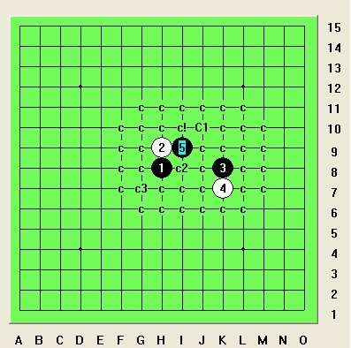
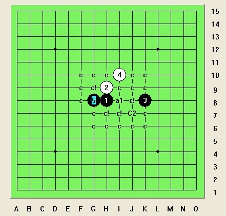

明教大金星研究
#1 明教大金星研究 作者：日月丽天 发表时间：2012-12-3 14:22:17
由花影教主建议，能让大家了解我们的大金星研究，在此介绍一直以来的大金星研究进展情况：
大金星属于一打黑可下妖刀，2打白必胜妖刀，此图为大金星谱图，由日月丽天和蓝色月亮共同制作，同时一些4的难点变化得到我们明教教友们帮助和努力，在此感谢！我们的大金星属于明教妖刀之一，每一个所研究4都由我们努力突破率先地毯，大金星版权归明教所有。
大金星1打和2打的情况在2007年下半年由明教人共同研究得到一个Ca强4的2打白必胜和一打黑必胜的结论。在2010下半年之时，我们也再次研究得到一打黑必胜到剩余唯一4的情况，这次给大家介绍大金星，也将主要介绍这个一打剩余唯一最强4B1已研究的情况。
［ 静燕思 于 2012-12-3 15:28:29 时花20金币送鲜花一朵］
［ 静燕思 于 2012-12-3 15:29:04 时花20金币送鲜花一朵］
［ 静燕思 于 2012-12-3 15:29:19 时花20金币送鲜花一朵］
［ 静燕思 于 2012-12-3 15:29:29 时花20金币送鲜花一朵］
［ 静燕思 于 2012-12-3 15:29:39 时花20金币送鲜花一朵］
［ 静燕思 于 2012-12-3 15:29:57 时花20金币送鲜花一朵］
［ 静燕思 于 2012-12-3 15:30:18 时花20金币送鲜花一朵］
［ 小冷 于 2012-12-3 16:27:19 时花20金币送鲜花一朵］
［ 小冷 于 2012-12-3 16:27:19 时花20金币送鲜花一朵］
［ 小冷 于 2012-12-3 16:27:19 时花20金币送鲜花一朵］
［ 小冷 于 2012-12-3 16:27:19 时花20金币送鲜花一朵］
［ 小冷 于 2012-12-3 16:27:19 时花20金币送鲜花一朵］
［ 小冷 于 2012-12-3 16:27:19 时花20金币送鲜花一朵］
［ 潇洒 于 2012-12-3 16:33:08 时奖励此帖[金币加 100 威望加1］
［ 小帮帮 于 2012-12-3 20:32:21 时花20金币送鲜花一朵］
［ 小帮帮 于 2012-12-3 20:32:21 时花20金币送鲜花一朵］
［ 小帮帮 于 2012-12-3 20:32:21 时花20金币送鲜花一朵］
［ 青蛙公主 于 2012-12-3 21:35:26 时花20金币送鲜花一朵］
［ 青蛙公主 于 2012-12-3 21:36:26 时花20金币送鲜花一朵］
［ 失落刀 于 2012-12-3 22:54:55 时花20金币送鲜花一朵］
［ 失落刀 于 2012-12-3 22:54:55 时花20金币送鲜花一朵］
［ 失落刀 于 2012-12-3 22:54:55 时花20金币送鲜花一朵］
［ 失落刀 于 2012-12-3 22:54:55 时花20金币送鲜花一朵］
［ 失落刀 于 2012-12-3 22:54:55 时花20金币送鲜花一朵］
［ 失落刀 于 2012-12-3 22:54:55 时花20金币送鲜花一朵］
［ 失落刀 于 2012-12-3 22:54:55 时花20金币送鲜花一朵］
［ 失落刀 于 2012-12-3 22:54:55 时花20金币送鲜花一朵］
［ 失落刀 于 2012-12-3 22:54:55 时花20金币送鲜花一朵］
［ 失落刀 于 2012-12-3 22:54:55 时花20金币送鲜花一朵］
［ 失落刀 于 2012-12-3 22:54:55 时花20金币送鲜花一朵］
［ 失落刀 于 2012-12-3 22:54:55 时花20金币送鲜花一朵］
［ 失落刀 于 2012-12-3 22:54:55 时花20金币送鲜花一朵］
［ 失落刀 于 2012-12-3 22:54:55 时花20金币送鲜花一朵］
［ 失落刀 于 2012-12-3 22:54:55 时花20金币送鲜花一朵］
［ 失落刀 于 2012-12-3 22:54:55 时花20金币送鲜花一朵］
［此帖子已被 潇洒 在 2012-12-4 13:18:40 编辑过］
#2 Re:明教大金星研究 作者：月光公主 发表时间：2012-12-3 14:31:59
最强4一些5
［ 失落刀 于 2012-12-3 22:53:29 时奖励此帖[金币加 100 威望加1］
［ 失落刀 于 2012-12-3 22:54:09 时花20金币送鲜花一朵］
［ 失落刀 于 2012-12-3 22:54:09 时花20金币送鲜花一朵］
［ 失落刀 于 2012-12-3 22:54:09 时花20金币送鲜花一朵］
［ 失落刀 于 2012-12-3 22:54:09 时花20金币送鲜花一朵］
［ 失落刀 于 2012-12-3 22:54:09 时花20金币送鲜花一朵］
［ 失落刀 于 2012-12-3 22:54:09 时花20金币送鲜花一朵］
［ 失落刀 于 2012-12-3 22:54:09 时花20金币送鲜花一朵］
［ 失落刀 于 2012-12-3 22:54:09 时花20金币送鲜花一朵］
［ 失落刀 于 2012-12-3 22:54:09 时花20金币送鲜花一朵］
［ 失落刀 于 2012-12-3 22:54:09 时花20金币送鲜花一朵］
［ 失落刀 于 2012-12-3 22:54:09 时花20金币送鲜花一朵］
［ 失落刀 于 2012-12-3 22:54:09 时花20金币送鲜花一朵］
［ 失落刀 于 2012-12-3 22:54:09 时花20金币送鲜花一朵］
［ 失落刀 于 2012-12-3 22:54:09 时花20金币送鲜花一朵］
［ 失落刀 于 2012-12-3 22:54:09 时花20金币送鲜花一朵］
［ 失落刀 于 2012-12-3 22:54:09 时花20金币送鲜花一朵］
#3 Re:明教大金星研究 作者：日月丽天 发表时间：2012-12-3 14:33:54
一打5，有唯一强6
#4 Re:明教大金星研究 作者：日月丽天 发表时间：2012-12-3 14:38:01
7唯一，还有唯一活三8
［ 狮子的天秤同学于 2014-3-24 21:42:50 时花20金币送鲜花一朵］
［ 狮子的天秤同学于 2014-3-24 21:42:50 时花20金币送鲜花一朵］
［ 狮子的天秤同学于 2014-3-24 21:42:50 时花20金币送鲜花一朵］
［ 狮子的天秤同学于 2014-3-24 21:42:50 时花20金币送鲜花一朵］
［ 狮子的天秤同学于 2014-3-24 21:42:50 时花20金币送鲜花一朵］
［ 狮子的天秤同学于 2014-3-24 21:42:50 时花20金币送鲜花一朵］
［ 狮子的天秤同学于 2014-3-24 21:42:50 时花20金币送鲜花一朵］
［ 狮子的天秤同学于 2014-3-24 21:42:50 时花20金币送鲜花一朵］
［ 狮子的天秤同学于 2014-3-24 21:42:50 时花20金币送鲜花一朵］
［ 狮子的天秤同学于 2014-3-24 21:42:50 时花20金币送鲜花一朵］
#5 Re:明教大金星研究 作者：季节心愿 发表时间：2012-12-3 15:04:37
第一次看到传说中的金星刀，顶一下。期待大金星的研究进展情况，也学习一下#6 Re:明教大金星研究 作者：静燕思 发表时间：2012-12-3 15:31:40
下妖刀，我一直就只喜欢开金星刀
#7 Re:明教大金星研究 作者：月光公主 发表时间：2012-12-3 16:47:19
金星刀是很多下妖刀的人喜爱的一把妖刀。#8 Re:明教大金星研究 作者：潇洒 发表时间：2012-12-3 17:01:24
金星刀很有趣。。丽天做谱辛苦了~
#9 Re:明教大金星研究 作者：月光公主 发表时间：2012-12-4 8:39:49
这个8，9唯一，唯一9做到地毯必胜，地毯完成于2012年3月22日
这个强8地毯完成后，大金星一直就还有唯一活三强8。
#10 Re:明教大金星研究 作者：日月丽天 发表时间：2012-12-4 9:12:43
一直以来对大金星认真的努力研究，虽还不能完成所有四的一打必胜，但也是尽我们全力了。
大金星必胜之路上特别要感谢我们明教空龙教主和逆刃老师的帮助和众教友的支持.
同时大金星这把妖刀也曾一直帮助过很多人进步和努力。
#11 Re:明教大金星研究 作者：日月丽天 发表时间：2012-12-4 9:20:25
我们大金星上几个C点4，C1,C2,C3完成一打必胜后，一直还没有做到两打必胜

比如这个4一打必胜后，一直还没有做到两打必胜，同时对称打也没有能必胜，还希望今后能取得进展和大家的帮助。
#12 Re:明教大金星研究 作者：紫露雨荷 发表时间：2012-12-4 10:16:37
大金星太漂亮了，
#13 Re:明教大金星研究 作者：郎情 发表时间：2012-12-11 2:57:44
#14 Re:明教大金星研究 作者：日月丽天 发表时间：2012-12-11 16:59:08
#15 Re:明教大金星研究 作者：日月丽天 发表时间：2012-12-11 17:05:04
#16 Re:明教大金星研究 作者：日月丽天 发表时间：2012-12-11 17:11:08
c1后面精彩vct
#17 Re:明教大金星研究 作者：郎情 发表时间：2012-12-12 2:26:22
［此帖子已被 郎情 在 2012-12-12 2:27:12 编辑过］
#18 Re:明教大金星研究 作者：郎情 发表时间：2012-12-12 3:04:07
#19 Re:明教大金星研究 作者：你真是难注册啊 发表时间：2012-12-26 14:57:08
请问：上图白22手如果不冲4如何杀？
#20 Re:明教大金星研究 作者：小样就是这个样 发表时间：2013-1-16 9:43:25
为什么爱五网互动棋谱没把强4的黑一打5添上，是因为那个强活三八吗？请金星刀粉丝们投票金星刀黑一打结果：A 可下；B 黑优； C 平衡； D 必胜。
——我投 D。 建议爱五网添上明教丽天一打5。。。。。
#21 Re:明教大金星研究 作者：日月丽天 发表时间：2013-1-16 10:47:27
回楼上高手，这个投票相当于猜测一样，和研究地毯证明是两把事：
大金星的最强4先前研究一打5说的这个
这个5我们研究到这个程度：
［此帖子已被 日月丽天 在 2013-1-16 11:31:50 编辑过］
#22 Re:明教大金星研究 作者：日月丽天 发表时间：2013-1-16 11:01:06
同样下面这个5，是之前认为的2打：
通过很长时间研究这个5有唯一强6

唯一强6通过地毯研究是白必胜：
经过地毯研究这个所谓2打5是黑必败。
［此帖子已被 日月丽天 在 2013-1-16 11:03:09 编辑过］
#23 Re:明教大金星研究 作者：小样就是这个样 发表时间：2013-1-16 11:31:46
错，我非明教丽天口中的高手，标准的菜鸟太感谢回复，你们快整到黑白两地毯了（这才叫名副其实的研究），以前听一位高手说了金一打5，并通过在爱五网上学习，处于找必胜的目的，拆了包括强活三八在内的几路强防，结果黑都有必胜。活三八后面由于涉及冲4冲3问题，变化多，一人应该难做地毯，由于必胜趋势很大没找到最强一路，希望丽天高手能发一路最强防。
#24 Re:明教大金星研究 作者：日月丽天 发表时间：2013-1-16 11:49:11
活三8后面还需要继续潜心研究，这样吧，如果你有兴趣也认真地毯地毯，如果你有地毯必胜好消息到时候可以提出来，即使还是做不了必胜，也自然有所心得。
必胜的愿望是最美好的，我和你确实一样希望必胜，而且更加一直都希望能必胜，因为每一个真心研究的人最希望自己所做的开局能必胜。
#25 Re:明教大金星研究 作者：小样就是这个样 发表时间：2013-1-16 12:00:04
#26 Re:明教大金星研究 作者：小样就是这个样 发表时间：2013-1-16 12:04:13
#27 Re:明教大金星研究 作者：日月丽天 发表时间：2013-1-16 13:29:58
你这个发图一些情况，还有问题，还有就是摆法按白2在上方向，好统一看［此帖子已被 日月丽天 在 2013-1-16 13:31:06 编辑过］
［ 失落刀 于 2013-1-16 18:35:38 时花20金币送鲜花一朵］
#28 Re:明教大金星研究 作者：小样就是这个样 发表时间：2013-1-16 14:21:30
呵呵，习惯了2在下面打谱，没按规则落子。往上第二图白24还有一个点在M9#29 Re:明教大金星研究 作者：小样就是这个样 发表时间：2013-1-16 15:05:29
［ 失落刀 于 2013-1-16 18:36:16 时奖励此帖[金币加 100 威望加1］0+1
建议把2摆在1的上面。
［此帖子已被 失落刀 在 2013-1-16 18:37:02 编辑过］